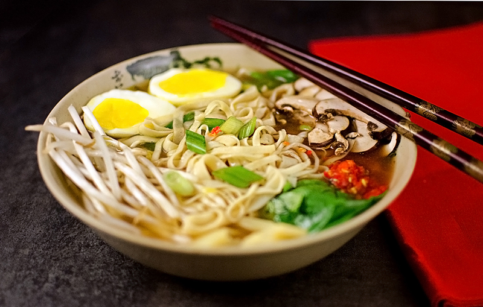

Recipe for Miso ramen
Miso Ramen is a delicious alternative to the usual cup ramen we all consume.
Not to mention how its a more traditional Japanese dish. It does not have
nearly the same amount of sodium and includes a lot more vegetables.
Let's go over the steps to making it!
- Ramen Noodles
- 1 cup of all purpose flour
- 1 large egg
- 1 tablespoon of water
- 1/2 teaspoon of Salt
- Ramen Noodle Broth
- 4 cups of vegetable broth
- 2 tablesppons of white miso
- 1 tablespoon of soy sauce
- 1 teaspoon dashi(omit for vegetarian version)
- Ramen Noodle Toopings
- 4 cremini of shiitake mushrooms
- bamboo shoots(canned or fresh
- 2 eggs
- 2 handfuls of spinach
- 1 handful of bean sprouts
Ramen Noodles
- add the flour and salt to a bowl, mix together
- create a bowl inside the flour and add egg & water
- whisk egg and slowly push in flour until all is combined
- knead for 2 minutes, cover in dampp cloth and rest for 30 minutes
- flatten dough and divide into 2 equal parts. Do this one at a time
- roll out dough until it is roughlt 1mm. sprinkle with flour and fold in half 2x
- with a sharp knife, cut into thin strips. add flour to strips and gently loosen with fingners to unfold noodles
- boil for 3-4 minutrs, drain and rinse with cold water
Ramen Noodle Broth
- add vegetable stock, soy sauce, & dashi to a large soup pot. bring to a boil. reduce heat and simmer for 10 mins
- during the last minute, add white miso and stir to disolve
- add spinach and noodles to a bowl, poor in miso broth
- divide toppings into 2 equal parts & add to bowl